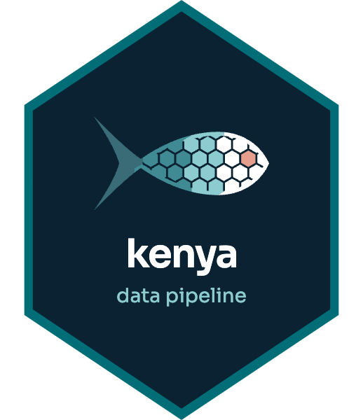

Standardize Enumerator Names
standardize_enumerator_names.RdTurns the enumerator names typed in the KEFS forms into one stable name per
person, anchored on the KEFS enumerators listed in Airtable (see
get_kefs_enumerators()). Their aliases, the spellings the data cannot tie
to them on its own (a different surname, two people with one name), are
applied first.
Arguments
- data
Raw KEFS survey data with columns 'submission_id', 'Name_of_Data_Collector', 'BMU' and 'date_data'.
- enumerators
Data frame with columns 'name' and 'aliases': other spellings of that person, separated by commas, semicolons or new lines; "spelling (bmu)" limits one to a BMU.
- min_submissions
A name that matches no one and appears in fewer submissions than this becomes "undefined".
Details
The function:
Lowercases names and keeps letters only ("Najma_Bausi" -> "najma bausi")
Matches a name to a person when every word of the shorter name matches a word of the longer one, in any order and with small typos ("mahmoud madi yusuf" -> "mahmud madi"), or when the two are the same once spaces are removed ("abdulhakim mohamed" -> "abdul hakim")
Tries the KEFS list first, then groups the other names among themselves, most frequent spelling first
Never merges two names that recorded landings on the same days at different BMUs: they are two people
Gives a first name alone ("naomi") to the one person with that name at the same BMU, and keeps it as its own name when there is none or several
Marks test entries, boat names ("mv ...") and blank names as "undefined"
Examples
raw <- data.frame(
submission_id = 1:7,
Name_of_Data_Collector = c(
"Amina Juma", "amina_juma", "Amina Said", "Hassan Ali Omar",
"hasan ali", "Peter", "test"
),
BMU = "vanga",
date_data = "2025-01-01"
)
enumerators <- data.frame(
name = c("Amina Juma", "Hassan Ali"),
aliases = c("amina said", NA)
)
clean <- standardize_enumerator_names(raw, enumerators)
stopifnot(identical(
clean$enumerator_name_clean,
c(rep("amina juma", 3), rep("hassan ali", 2), "undefined", "undefined")
))